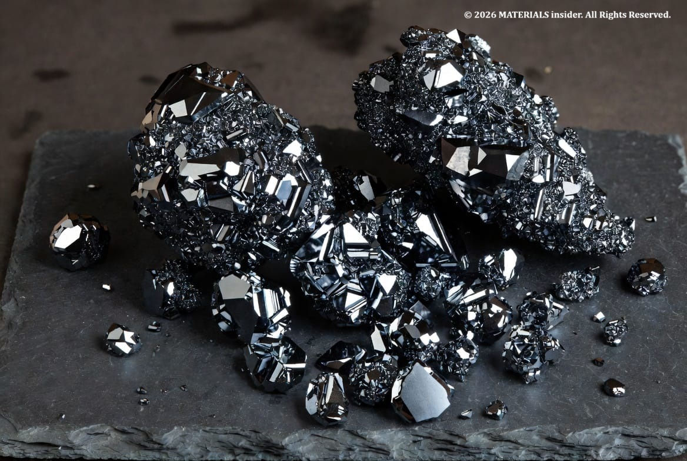
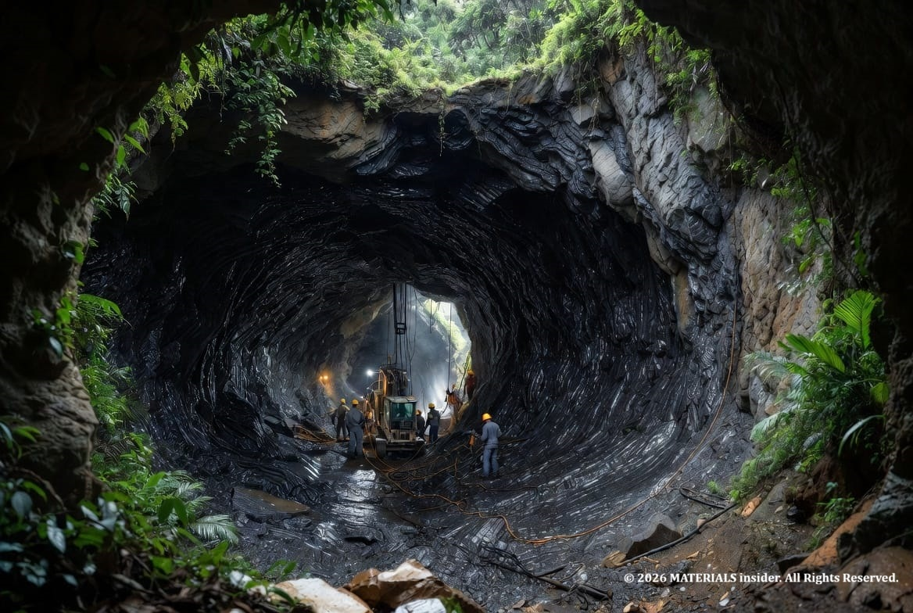
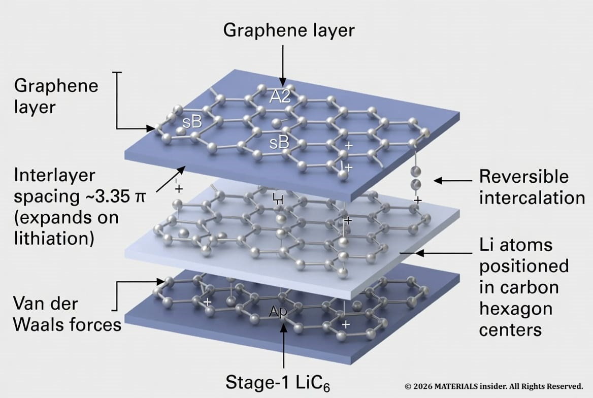
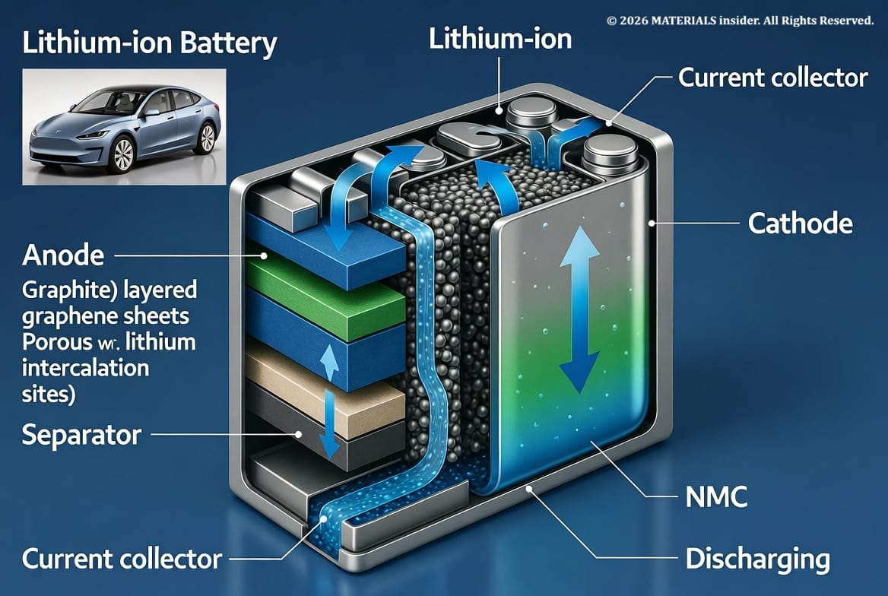
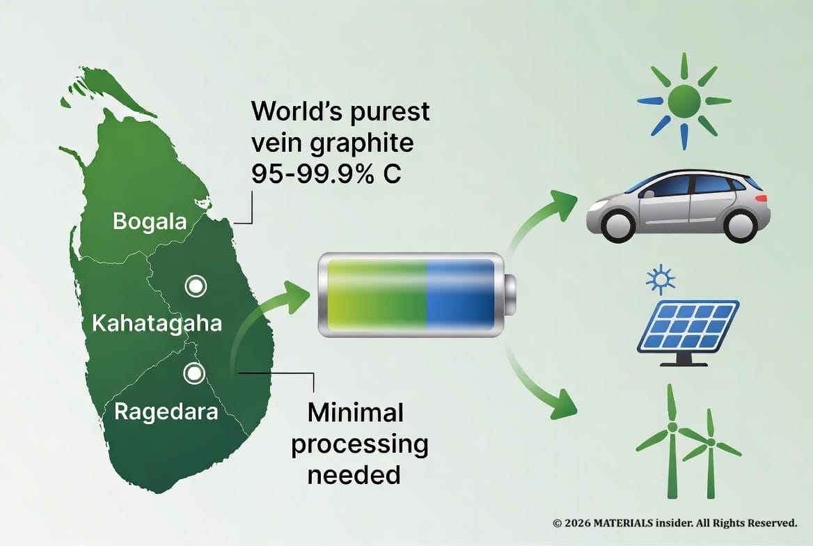

Sri Lanka's Vein Graphite - The Ultra-Pure Mineral Supercharging the Global EV Battery Revolution and Energy Transition
Discover how Sri Lanka's world-unique high-purity vein graphite is becoming a critical material for lithium-ion battery anodes, powering electric vehicles and the global shift to renewable energy. A deep dive into atomic mechanisms, mining heritage, and Sri Lanka's strategic opportunity.

From ancient veins deep under Sri Lankan soil to the heart of every modern electric vehicle battery — this is the story of one of the world's most overlooked yet essential materials
They everyone, have you ever stopped to think about what actually lets your future electric car go hundreds of kilometers on a single charge without running out of "juice"? It's not just fancy software or powerful motors. A huge part of it comes down to a humble but extraordinary form of carbon called graphite — and Sri Lanka happens to produce the purest, highest-quality version of it on the entire planet.
Let's dive into why Sri Lankan vein graphite is quietly emerging as a strategic superstar in the global energy transition.

The World's Only Commercial Vein Graphite Source in Sri Lanka?
Sri Lanka is unique. While most of the world's graphite is either lower-grade flake or energy-intensive synthetic material made from petroleum coke, Sri Lanka mines crystalline vein graphite (also called lump graphite). This stuff forms in dramatic vertical veins through metamorphic rock and can reach 95–99.9% carbon purity straight from the ground.
Sri Lanka is unique. While most of the world's graphite is either lower-grade flake or energy-intensive synthetic material made from petroleum coke, Sri Lanka mines crystalline vein graphite (also called lump graphite). This stuff forms in dramatic vertical veins through metamorphic rock and can reach 95–99.9% carbon purity straight from the ground.
No other country produces it in meaningful commercial quantities. The major operations — Kahatagaha (operating since 1872), Bogala (since the 1840s), and Ragedara (Queen's Mine) — have supplied high-end industries for over 150 years. Current production is modest (a few thousand tonnes annually), but the quality is unmatched.
Why does this matter for batteries? In lithium-ion batteries, the anode is roughly 95% graphite. Higher crystallinity and purity translate directly into better lithium storage capacity, faster charging potential, longer cycle life, and more efficient energy density. Sri Lankan vein graphite's near-perfect crystal structure gives it a real performance edge.
How Graphite Actually Stores Energy in Batteries:
Here's where it gets really cool. At the atomic scale, graphite isn't just a bunch of carbon atoms sitting around. It's made of stacked sheets of graphene — single layers of carbon atoms arranged in perfect hexagonal (honeycomb) lattices.
In natural graphite, these sheets stack in an AB pattern with a comfortable interlayer spacing of about 3.35 Ångstroms, held together by weak van der Waals forces. This weak bonding is the secret sauce.
During charging of a lithium-ion battery, positively charged lithium ions (Li+) travel from the cathode through the electrolyte and intercalate — slide in between — the graphene layers of the graphite anode. They don't just sit randomly; they organize into highly ordered structures called Graphite Intercalation Compounds (GICs).

The most famous is Stage 1 LiC₆, where lithium occupies every interlayer space, and the graphene sheets shift into AA stacking. Each lithium atom nestles right in the center of a carbon hexagon ring, with some electron transfer happening that stabilizes the whole structure. This reversible process gives graphite its theoretical capacity of 372 mAh/g.
When you discharge the battery (use the car), the lithium ions de-intercalate and head back to the cathode. The layers relax back. High-purity, highly crystalline vein graphite from Sri Lanka handles these expansion/contraction stresses beautifully with minimal defects, leading to excellent reversibility and longevity.
It's mind-blowing when you realize your EV's acceleration and range depend on billions of these tiny atomic-scale parking spots for lithium ions inside perfectly arranged carbon sheets mined from Sri Lankan veins.
Real-World Applications:
Graphite anodes enabled the lithium-ion battery revolution that won the 2019 Nobel Prize in Chemistry. Today:
- Electric Vehicles: A typical EV battery pack contains 50–100+ kg of graphite anode material. Global EV sales are exploding, and graphite demand is projected to surge dramatically through 2030 and beyond.
- Grid-scale energy storage: Pairing solar and wind farms with massive battery banks requires enormous quantities of reliable anode graphite. Sri Lanka's material supports longer-lasting, higher-performance systems.
- Consumer electronics: Phones, laptops, and power tools all rely on the same intercalation chemistry.
- Emerging tech: Researchers are even using Sri Lankan vein graphite in advanced lithium-ion capacitors and exploring modifications for sodium-ion batteries.
One study using purified Sri Lankan vein graphite demonstrated strong performance in a lithium-ion capacitor configuration, highlighting its versatility for high-power energy storage applications.
The best part for the planet? Sri Lankan vein graphite often requires far less processing than flake graphite or synthetic alternatives. Underground mining has a smaller surface footprint, and its natural purity reduces the need for harsh chemical purification or energy-heavy graphitization steps. This lower embodied energy makes it genuinely attractive for truly sustainable supply chains.

Sri Lanka's Strategic Opportunity in the Global Energy Transition:
Right now, China dominates graphite processing and anode production. But supply chain diversification is a massive priority for EV makers and governments pushing net-zero targets. Sri Lanka sits in a sweet spot:
- Unmatched natural purity and crystallinity
- Existing mining expertise and infrastructure
- Growing international interest in "non-China" battery materials
- Potential for high-value downstream processing (spheroidization, purification to battery-grade >99.95%, even graphene or advanced anode materials)
Instead of exporting raw lumps at lower prices, Sri Lanka has a real chance to build local value-add industries — creating jobs, attracting investment, and positioning itself as a key node in the clean energy materials map. Recent government moves toward public-private partnerships for mine modernization are encouraging signs.
Challenges remain: scaling production sustainably, developing local technical expertise for advanced processing, and competing on cost with established players. But the fundamental geology and quality advantage are undeniable.

The Bottom Line:
Sri Lanka's vein graphite isn't just another mineral export. It's a high-performance, naturally superior material that literally helps store and deliver clean energy in the batteries powering the greatest industrial transformation of our time.
As the world races toward electrified transport and renewable-heavy grids, the quiet veins running beneath Sri Lankan soil are becoming surprisingly strategic. For a small island nation, this represents both an economic opportunity and a chance to contribute meaningfully to global decarbonization.
Next time you see an EV silently gliding by or a solar farm feeding the grid at night, remember: there's a good chance some of the highest-quality carbon enabling that future came from deep, sparkling veins in Sri Lanka.
The materials revolution is here — and Sri Lanka has a front-row seat.
Further Reading & Original Sources:
- Gao, X. et al. (2017). "A High Performance Lithium-Ion Capacitor with Both Electrodes Prepared from Sri Lanka Graphite Ore."Materials, 10(4), 414. (DOI: 10.3390/ma10040414) — Demonstrates practical high-performance energy storage devices using Sri Lankan vein graphite."
- Review on graphite anode fundamentals: "Graphite as anode materials: Fundamental mechanism, recent progress and advances."Energy Storage Materials, Volume 36, April 2021, Pages 147-170. Excellent deep dive into intercalation chemistry and staging."
- Industry and geological context: Multiple reports on Sri Lankan vein graphite from Bogala Graphite Lanka, Kahatagaha Graphite Lanka Ltd., and research on hydrothermal vein formation and battery performance advantages of high-crystallinity natural graphite.
- Market analyses on critical minerals demand for energy transition (EV battery graphite requirements ~1,200 tonnes per GWh; surging anode demand through 2030–2035).
Images generated for educational use on MaterialInsider.com. All scientific diagrams are illustrative based on established materials science principles. All rights reserved.
Tags: Sri Lanka graphite, vein graphite, natural graphite batteries, lithium ion battery anode graphite, energy transition materials, EV battery supply chain, graphite intercalation compounds, high purity graphite, critical minerals Sri Lanka, Bogala graphite, Kahatagaha graphite
This article is optimized for search with primary keywords naturally integrated throughout. Suggested internal links: Superconductors, Diamond Batteries, or Self Healing Materials.
Share this article: